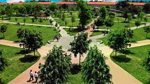
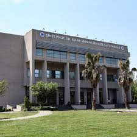
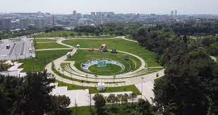
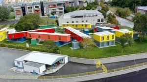
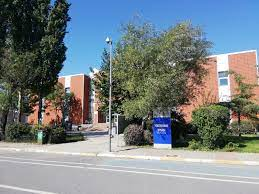
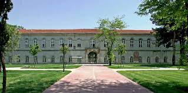
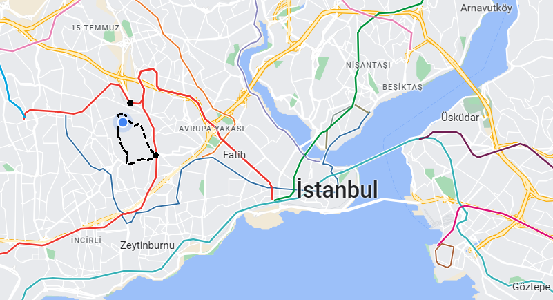

Kampüsü Tanıma
Kampüsteki muhtemel en uğrak noktalarınız
- Ortabahçe

Güzel sohbetlerin döneceği favori mekandır.
- Kütüphane

A kapısına yakın, 8. haftadan sonra yeni eviniz olacak yer. Ayrıca
yemekhane binasının yanına yeni bir kütüphane inşaat ediliyor.
- Festival alanı

Adı üstünde şenliklerin, konserlerin olduğu çok güzel bir yer.
- Kulüpler Vadisi

Üniversitede sadece derse girilmez. Siz de sevdiğiniz kulüplerde görev
almaya başladıkça burada vakit geçireceksiniz.
- Yemekhane

Ortabahçe'ye kadar uzanan dev kuyruğu gördüğünüzde hemen
telaşlanmayın. Sakince sıraya girin ve beklemeye başlayın.
Yanınızda sohbet edecek iyi arkadaşlar bulundurun. Sıranın hızlı
ilerlediğini farkettiğinizde rahatlayacaksınız.
- Taş bina

Ortabahçe'nin etrafını saran 'U' şeklinde okulun simgesi bina.
Ortabahçe'ye geçiş için çok kullanılır.
En başa dön
Ulaşım Seçenekleri
Ytü-Davutpaşa kampüsüne önerilen ulaşım seçenekleri

- M1A Davutpaşa-Ytü durağı
M1A metro hattında Davutpaşa-Ytü durağında inerek kampüse
ulaşabilirsiniz.
- M1B Esenler durağı
M1B Esenler durağında inip yaklaşık 10-15dk yürüyerek Ytü-Davutpaşa B
kapısına ulaşabilirsiniz.
- 41AT otobüs hattı
41AT otobüs hattı Ayazağa-Davutpaşa arası gidip gelen bir hattır.
Ytü-Davutpaşa A kapısında öğrenci kartı kontrolü yapıldıktan sonra
otobüs hattı kampüs içinde devam eder.
- Cevizlibağ ringi
Cevizlibağ'dan aktarmasız Ytü-Davutpaşa kampüsüne ulaşabilirsiniz.
- Yıldız-Beşiktaş ringi
YTÜ Yıldız kampüsünden aktarmasız Ytü-Davutpaşa kampüsüne
ulaşabilirsiniz.
En başa dön
Yemek Mekanları
Ytü-Davutpaşa kampüsüne çevresinde önerilen yemek mekanları
Linklere tıklayarak konumlara ulaşabilirsiniz.
-
Damak
Esenler metro durağı yakınlarında bulunan favori dönercidir.
Verdiğiniz paraya alacağınız maksimum verimde tombik döner yapıyorlar.
-
Çiğköfteci Ahmet Usta
Bu civardaki gidebileceğiniz en iyi çiğköftecidir. Ustanın lezzeti ve
muhabbeti çok sevilir. Buradan başka çiğköfteciye gitmemeniz önerilir.
-
Kanatçı İbo
Ytü öğrencileri arasında en popüler mekanlardan biri olma özelliğine
sahiptir. Her Ytü öğrencisinin yolu mutlaka buraya düşüyor. Tavsiye
edilir.
-
Lort Market
Saat 9'dan sonra markete gitme ihtiyacı duyduğunuzda size en yakın ve
optimal seçenek budur.
En başa dön